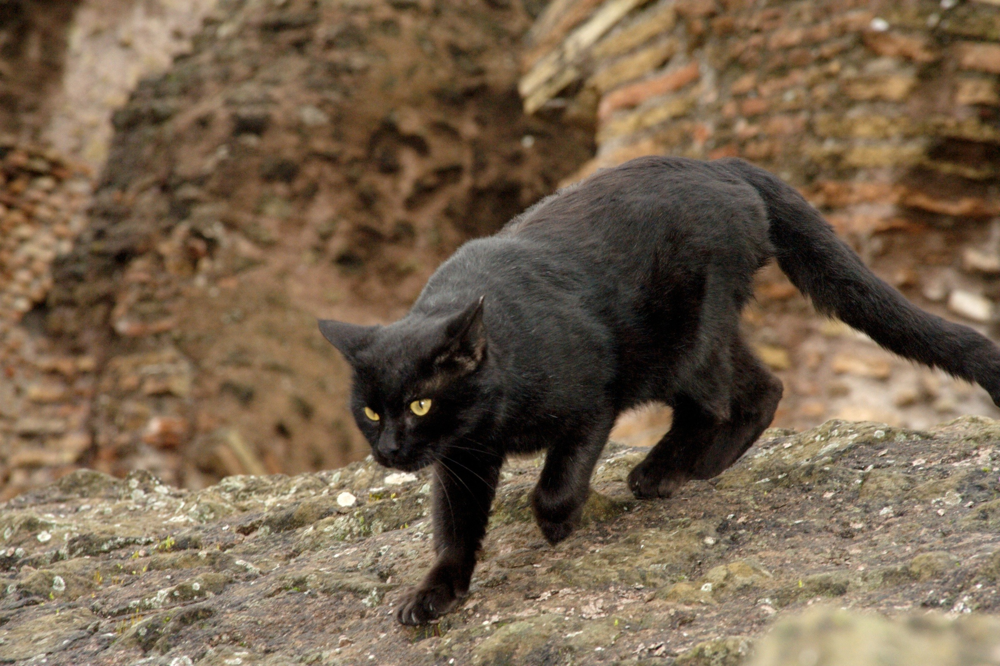

Around the World
-
Egypt
Cats were worshipped and even mummified with their owners. The first known trace of domestic cats originated in Egypt around 7500 BCE.
-
China
During the Song Dynasty, cats were a popular pet of the rich after the Emperor was given one in 500 BCE.
-

Italy
Romans valued cats highly for pest control. Cats came into Europe through trade with the Greek and Phoenecians.
Effect on Your Health
Research has shown...
- Cats can protect you against allergies, asthma, and heart attacks
- The frequencies of their purrs is high enough to aid bone and skin repairs
- Petting one has calming effects and can lower anxiety
Adopt
There are multiple options for adopting a cat or kitten:
- Adopt from a shelter, find one here
- Find a breeder
- Adopt from a sanctuary or rescue